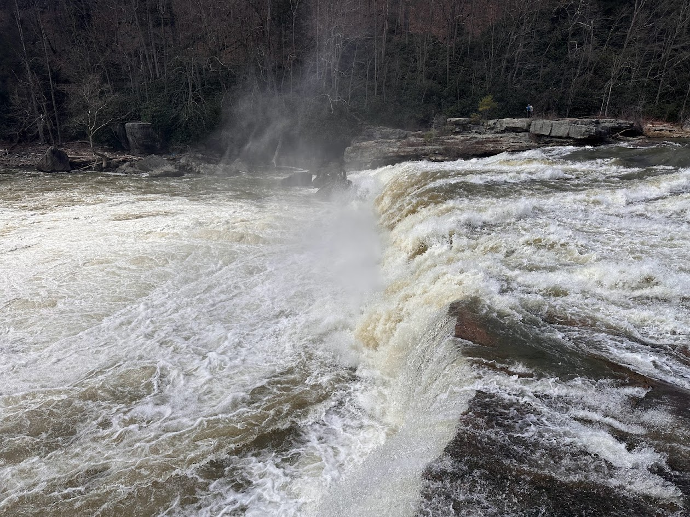

Laurel Highlands Attractions
This map is of my hometown in the Laurel Highlands of Pennslyvania, and was created to expierment with DEM's and hillshade layers and turning them into 3D objects using animatation softwares.
Project Details / Background
This map was for a assignment in my advanced cartography class with the goal of demonstrating how animation software, specfically Blender in this assignment, can advance DEM and hillshade design and rendering through 3D animation of such files. I chose to map my hometown because I had been wanting to map the area, but early on in my mapping career there was little vector data, specifcally for roads and water bodies, on the region due to its remoteness.But thanks to advancemnet in data from the Pennsylvania Spatial Data Access I was able to make my wish a reality.
For this map we gathered TIFF files of a mountainous region, and then cleaned and formatted the data in a way that would be compatable with the Blender Software. For this project I used Blender, Qgis, Photoshop and Illustrator to complete this map.
Image Gallery

Ohiopyle Falls In the Ohiopyle State Park
Cumberland Falls In the Ohiopyle State Park.
Scenery of Listonburg Borough